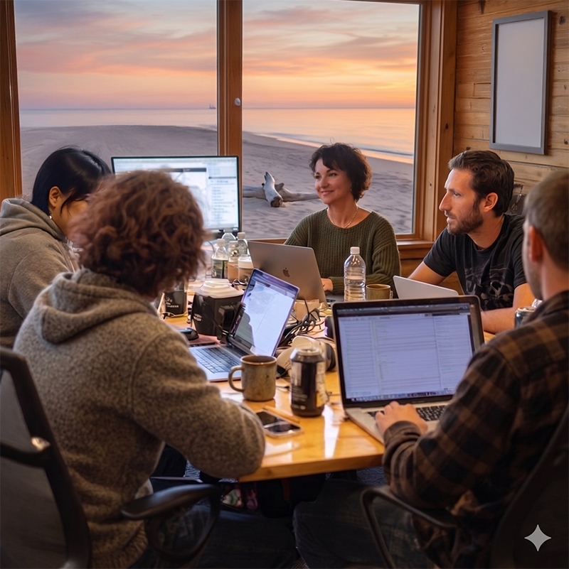

Consciousness Mini-Hackathon
A room will be set aside throughout the conference as an informal space for coding, tinkering, and exchanging ideas. Drop in whenever you like—between sessions, in the evening, or whenever inspiration strikes. This is a self-organized side event, not a competition. Think of it as a place to hang out with fellow researchers who like to build things.
With AI-assisted coding tools like Claude Code and Codex, what used to take weeks can now be done in days. Bring your laptop, your data, your own AI subscription, and see what you can put together with others who share your curiosity about consciousness.
What Might Happen

There is no fixed agenda. Past hackathons have produced everything from EEG smartphone app to philosophical argument mappers. Some possibilities:
- Build something new — an analysis pipeline, a visualization, an experimental paradigm
- Collaborate on a paper — use AI-assisted writing and coding to go from idea to draft within the conference
- Exchange methods — show someone your workflow, learn theirs
- Just hang out — bring your laptop and work alongside others in a shared space
No registration required. Bring your laptop, your data, and your own AI subscription. Facilitators will be present. For questions or to be a moderator, please contact info@tsc2026.org.